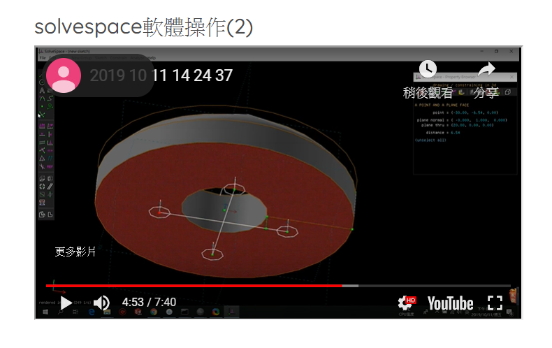
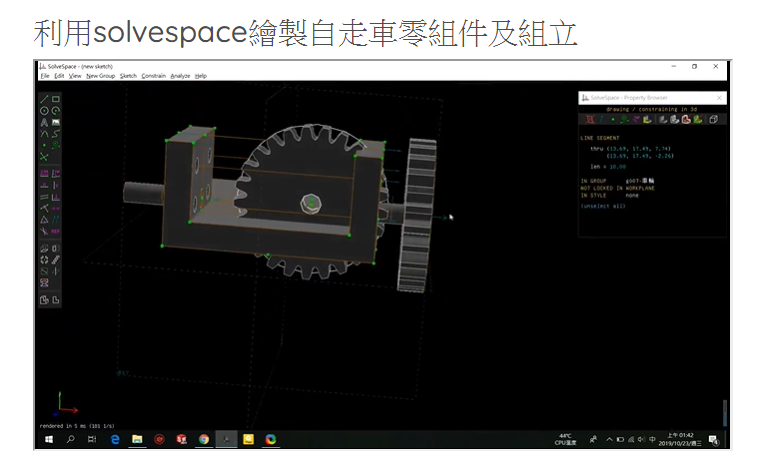
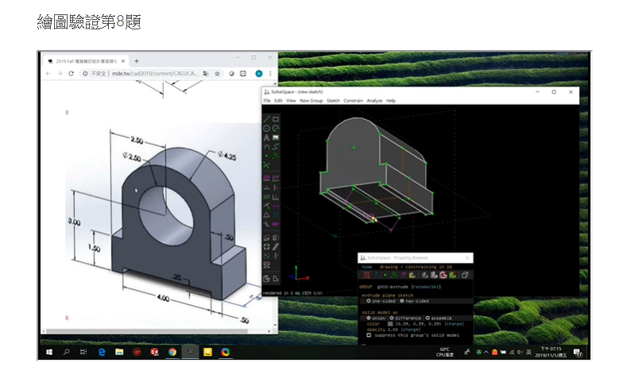

<!doctype html>
<html lang="en">
<head>
    <meta charset="utf-8">
<title>
CMSimfly 網際內容管理
</title>
    <meta name="description" content="A framework for easily creating beautiful presentations using HTML">
    <meta name="author" content="Hakim El Hattab">
    
    <meta name="apple-mobile-web-app-capable" content="yes">
    <meta name="apple-mobile-web-app-status-bar-style" content="black-translucent">
    
    <meta name="viewport" content="width=device-width, initial-scale=1.0, maximum-scale=1.0, user-scalable=no">
    
    <link rel="stylesheet" href="css/reveal.css">
    <link rel="stylesheet" href="css/theme/black.css" id="theme">
    
    <!-- Theme used for syntax highlighting of code -->
    <link rel="stylesheet" href="lib/css/zenburn.css">

    <!-- Printing and PDF exports -->
    <script>
        var link = document.createElement( 'link' );
        link.rel = 'stylesheet';
        link.type = 'text/css';
        link.href = window.location.search.match( /print-pdf/gi ) ? 'css/print/pdf.css' : 'css/print/paper.css';
        document.getElementsByTagName( 'head' )[0].appendChild( link );
    </script>

    <!--[if lt IE 9]>
    <script src="lib/js/html5shiv.js"></script>
    <![endif]-->
</head>

<body>
<div class="reveal">
<!-- Any section element inside of this container is displayed as a slide -->
<div class="slides">
<section data-markdown>
    <script type="text/template">
###CAD 40723114 個人簡報


<small>
Created by [KMOLab](http://lab.kmol.info/)
</small>

[CMSimfly 網誌](./../blog/index.html)


    </script>
</section>


						
<section data-markdown>
    <script type="text/template">
##NX12簡略介紹


<small>
Created by [NX說明](https://s40723114.github.io/cad2019/content/NX%20%E8%AA%AA%E6%98%8E.html)


</small>

[CMSimfly 網誌](./../blog/index.html)


    </script>
</section>


						
<section data-markdown>
    <script type="text/template">
##NX12 操作


<small>
Created by [NX12操作影片](https://s40723114.github.io/cad2019/content/NX12%20%E6%93%8D%E4%BD%9C%E5%BD%B1%E7%89%87.html)

</>

[CMSimfly 網誌](./../blog/index.html)


    </script>
</section>


						
<section data-markdown>
    <script type="text/template">
###W5 solvespace軟體操作


<small>
Created by [W5](https://s40723114.github.io/cad2019/content/week5.html)
</small>

</>

[CMSimfly 網誌](./../blog/index.html)


    </script>
</section>


						
<section data-markdown>
    <script type="text/template">
###W6 利用solvespace繪製自走車零件


<small>
Created by [W6](https://s40723114.github.io/cad2019/content/week6.html)
</small>

</>

[CMSimfly 網誌](./../blog/index.html)


    </script>
</section>


						
<section data-markdown>
    <script type="text/template">
###W7 繪圖驗證


<small>
Created by [W7](https://s40723114.github.io/cad2019/content/week7.html)
</small>

</>

[CMSimfly 網誌](./../blog/index.html)


    </script>
</section>


						
</div>

</div>

<script src="lib/js/head.min.js"></script>
<script src="js/reveal.js"></script>
<script>
        // More info https://github.com/hakimel/reveal.js#configuration
        Reveal.initialize({
            controls: true,
            progress: true,
            history: true,
            center: true,

            transition: 'slide', // none/fade/slide/convex/concave/zoom

            // More info https://github.com/hakimel/reveal.js#dependencies
            dependencies: [
                { src: 'lib/js/classList.js', condition: function() { return !document.body.classList; } },
                { src: 'plugin/markdown/marked.js', condition: function() { return !!document.querySelector( '[data-markdown]' ); } },
                { src: 'plugin/markdown/markdown.js', condition: function() { return !!document.querySelector( '[data-markdown]' ); } },
                { src: 'plugin/highlight/highlight.js', async: true, callback: function() { hljs.initHighlightingOnLoad(); } },
                { src: 'plugin/zoom-js/zoom.js', async: true },
                { src: 'plugin/notes/notes.js', async: true },
                { src: 'plugin/math/math.js', async: true }
            ]
        });
</script>
</body>

</html>

